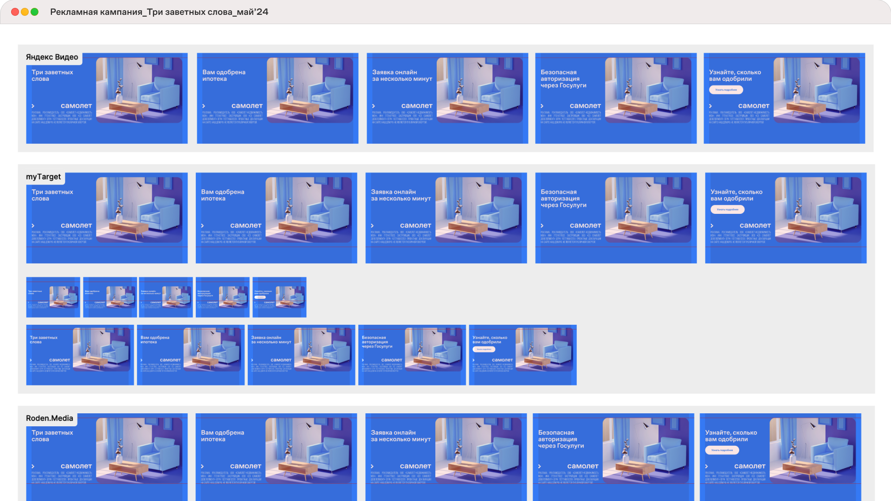

В этом кейсе рассказываю о результатах моей деятельности в «Самолет», где я работал последние три года.
Шейповая анимация, регулярные рилсы, отчетные шоурилы, рекламные кампании, спецпроекты, коллаборации, особые форматы для Telegram и первые 3D-эксперименты.
Это не разрозненные ролики, а системная работа моушен-дизайнера внутри бренда: разные задачи, масштаб и подход в зависимости от площадки и цели.
Направления работы
Шейповая анимация
Когда я пришел в компанию, визуальная система уже была выстроена и строго регламентирована. Дизайн-отдел придерживался четких правил как в статике, так и в моушене: без лишних приемов и стилистических экспериментов.
В первый год работы основой стали функциональные задачи: анимация плашек, иконок, интерфейсных элементов, маршрутов на картах. Это была работа с ритмом, аккуратностью и точным следованием гайдлайнам без «эффектов ради эффектов».

Спецпроекты
Со временем нам удалось доказать, что SMM гораздо свободнее, чем наружная реклама, печатные материалы или офисы продаж. Постепенно мы с командой начали позволять себе чуть больше: в графике, съемках, текстах и, конечно, в моушене.
Сначала такие отклонения от гайдов появлялись в рамках спецпроектов: запусков мобильных игр от «Самолет» или брендовых ботов. В этих случаях в анимации я отталкивался от ключевого визуала проекта и развивал его в динамике уже под задачи соцсетей.
Коллаборации с брендами
На формирование motion- и визуального языка в SMM «Самолет» влияли не только внутренние спецпроекты, но и коллаборации с другими брендами. В таких задачах нужно было учитывать брендбуки партнеров и аккуратно совмещать их с нашей системой.
Отдельным этапом для меня стала коллаба с женской сборной ЦСКА. Здесь я включился в постпродакшен как полноценный соавтор: не только оформлял существующие смыслы, но и добавлял новые через ритм, акценты, информационную графику и драматургию.
Задача была не «доделать ролик», а переосмыслить его так, чтобы удержание выросло и продакшен действительно отрабатывал вложенные ресурсы.
Поддерживающая анимация для рилсов
Не каждый ролик строится на моушене. Иногда контент держится на самой идее: отсылке, юморе, ситуативе или просто сильных исходных материалах.
В таких задачах анимация играет поддерживающую роль. Она помогает аккуратно донести смысл, расставить акценты и сделать графику убедительной, но не перетягивает внимание на себя.
Здесь важно чувство меры: не усложнить, не перегрузить и не «передавить» материал эффектами. Иногда лучший моушен тот, который почти не замечают.
Уникальные форматы для Telegram
Помимо полноценных контентных единиц, которые кросспостились на разные площадки, я делал и отдельные форматы специально под Telegram. Это были видео-кружки и анимированные эмоджи: компактные, нативные форматы, встроенные в механику платформы.
Анимированные эмоджи стали частью навигации по каналу. Они помогали быстро считывать намерение поста: поделиться новостью со стройки, анонсировать запуск или предложить скидку.
Видео-кружки чаще использовали для нативной поддержки инфоповодов. Подбирали круглые объекты и «прокручивали» их в кадре, усиливая тему через форму и движение.
Этот кейс показывает не только мой профессиональный путь внутри компании, но и этап визуального и анимационного становления SMM компании «Самолет».
За это время менялся подход к графике, расширялись рамки допустимого, появлялись коллаборации, новые форматы и эксперименты. Вместе с этим росла и роль моушена: от аккуратной поддержки гайдлайна до полноценного инструмента коммуникации.